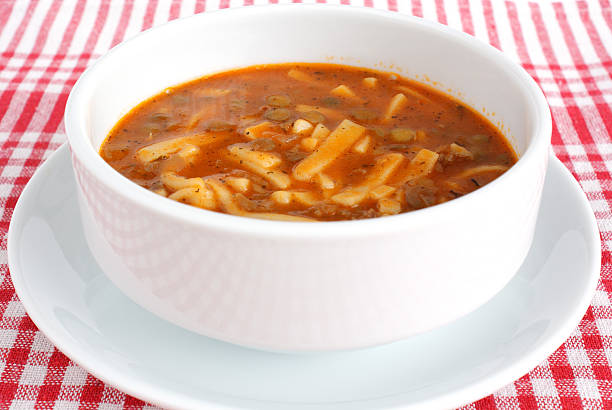

Soğuk kış günlerinin kurtarıcısı olan çorba, bu kez yine doyurucu ve sıcacık haliyle içimizi ısıtıyor. Tokat usulü hazırladığımız Bacaklı çorba tarifimizi sizler için yazdık, mutfağa girip hazırlaması da sizden olsun.
Ve işte çok seveceğiniz tarifi sizler için hazır...

Bacaklı Çorba
Malzemeler
- 1,5 litre su
- 1 su bardağı yeşil mercimek
- 1 çay bardağı erişte
- 1 yemek kaşığı tereyağı
- 2 yemek kaşığı sıvı yağ
- 1 adet soğan
- 1 yemek kaşığı salça
- 1 çay kaşığı nane
- 1 tatlı kaşığı tuz
Nasıl yapılır?
- Yeşil mercimekleri yıkayıp süzün. Tencereye suyu ekleyin ve kaynadıktan sonra mercimekleri koyarak haşlamaya başlayın.
- Yarı pişmiş mercimeklerin üzerine erişteleri de ekleyin ve kısık-orta ateşte pişmeye bırakın.
- Bir tavaya sıvı yağ ve tereyağını alarak ısıtın.
- Küp küp doğradığınız soğanları tavaya ekleyerek kavurun. Salça ve naneyi ekleyerek 1-2 dakika daha kavurun.
- Tavadaki naneli salça karışımını, ocakta kaynayan tencereye ekleyin. Tuzunu da ekleyin ve bir taşım daha kaynatın.
İŞTE PÜF NOKTALAR!!!
Eriştelerin çok yumuşak olmaması için mercimeklerle beraber suya eklemeyin. Mercimekler yarı piştiğinde eklerseniz iki malzeme de aynı anda pişmiş olur.
AFİYET OLSUN